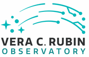

SAL_Test
»
Index
Index
T
T
Test_ackcmdC (C++ struct)
Test_arraysC (C++ struct)
Test_command_abortC (C++ struct)
Test_command_disableC (C++ struct)
Test_command_enableC (C++ struct)
Test_command_enterControlC (C++ struct)
Test_command_exitControlC (C++ struct)
Test_command_faultC (C++ struct)
Test_command_setArraysC (C++ struct)
Test_command_setAuthListC (C++ struct)
Test_command_setLogLevelC (C++ struct)
Test_command_setScalarsC (C++ struct)
Test_command_setValueC (C++ struct)
Test_command_standbyC (C++ struct)
Test_command_startC (C++ struct)
Test_command_waitC (C++ struct)
Test_logevent_appliedSettingsMatchStartC (C++ struct)
Test_logevent_arraysC (C++ struct)
Test_logevent_authListC (C++ struct)
Test_logevent_errorCodeC (C++ struct)
Test_logevent_heartbeatC (C++ struct)
Test_logevent_logLevelC (C++ struct)
Test_logevent_logMessageC (C++ struct)
Test_logevent_scalarsC (C++ struct)
Test_logevent_settingsAppliedC (C++ struct)
Test_logevent_settingVersionsC (C++ struct)
Test_logevent_simulationModeC (C++ struct)
Test_logevent_softwareVersionsC (C++ struct)
Test_logevent_summaryStateC (C++ struct)
Test_scalarsC (C++ struct)